COMPUTATIONAL BIOMEDICINE / EXPERIMENT 001
When the monitor
says everything’s fine.
What happens when oxygen readings drift, venous return falls, and more pump flow becomes the wrong answer? Explore a cardiopulmonary bypass simulation built to reveal the tradeoffs.
01 / ENTER THE LAB
A controlled failure.
Representative virtual patient · Seed 100 · 20-minute experiment
Delivery: truth vs. monitor
TrueMonitorTarget
The reservoir constraint
Volume (L)¹ Monitor values, and sensed/lower-estimate reservoir traces where shown, come from the start of the preceding 2-second interval. Reservoir truth is at interval end; green = truth, cyan = sensed, amber = guarded lower estimate. Plots are sampled every 6 seconds; full-resolution metrics use every 2-second step. The browser replays Python output and does not run a second physiology engine.
WHOLE EXPERIMENT / SELECTED PATIENT
ORIGINAL COHORT / 24 VIRTUAL PATIENTS
Difference = selected strategy − reactive. Bootstrap intervals describe the synthetic sampler, not clinical benefit.02 / A SMALL WHAT-IF
Flow is only
half the story.
At the same flow, anemia changes how much oxygen blood can carry. Try the standard arterial-content equation. This calculator is separate from the replay.
mL O₂/min/m²
SaO₂ = 0.98 · PaO₂ = 150 mmHg · BSA = 1.85 m². Fixed hypothetical conditions; no recommended treatment.03 / MAP THE FAILURE
Where the forecast breaks.
392 additional simulations vary reservoir-sensor bias and drainage. Red in the difference panel means Sentinel spends more time below the experimental reservoir floor than reactive. An improved oxygen metric can conceal this failure.
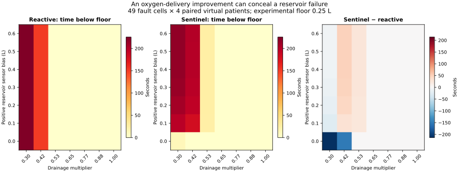
Four paired virtual patients per cell · seeds 500–503 · synthetic conditions, not a clinical safety envelope.04 / FOLLOW THE FAILURE
A guard, with a measurable cost.
The original forecast trusts the reservoir sensor. A new strategy checks whether each level change fits a declared mass-balance envelope. An implausible jump triggers an inferred offset correction and a latched reserve margin. It uses current and past observations, with no access to the true reservoir or fault magnitude.
Original → guarded · +0.40 L bias
The cost of the conservative response
All results and failures retained
Across 24 fresh virtual patients, the paired reservoir-exposure difference is −79.33 s (95% bootstrap interval −115.75 to −43.92). Oxygen deficit rises by 57.32 mL O₂/m² (31.72 to 85.43). These intervals describe this synthetic sampler. They do not establish clinical benefit.
| Scenario | Original low-reservoir s | Guarded low-reservoir s | Original deficit AUC | Guarded deficit AUC |
|---|---|---|---|---|
| Nominal | 0.00 | 0.00 | 0.35 | 0.35 |
| Hemodilution | 0.00 | 0.00 | 8.57 | 8.57 |
| Hb bias | 0.00 | 0.00 | 47.04 | 47.04 |
| Venous obstruction | 0.00 | 0.00 | 0.82 | 0.82 |
| Oxygenator loss | 0.00 | 0.00 | 0.46 | 0.46 |
| Compound | 0.00 | 0.00 | 77.58 | 77.58 |
| Level bias +0.40 L | 79.33 | 0.00 | 0.90 | 58.22 |
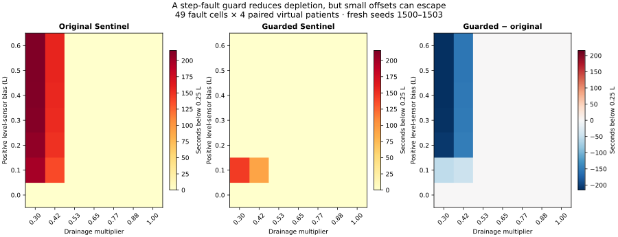
Where it still fails: the +0.10 L bias cases still reach 144.5 s mean reservoir exposure in the worst cell. A small jump can escape the detector until the bias disappears. Initial offsets and slow drift cannot be identified by this method. Independent flow sensing, a 7.5 L/min drainage cap, and engineering margins are assumptions.
Stress map: 49 cells × four paired patients × three policies · seeds 1500–1503. The replay above uses seed 100 and cohort seeds 100–123, separate from this fresh evaluation. Choose “Guarded Sentinel” and “Level-sensor bias” above to replay the extension.05 / CHALLENGE THE GUARD
Does a simpler reserve do just as well?
Two simple changes to original Sentinel test whether detection adds value: always keep extra reserve, or cap pump flow. An exploratory pilot hit a search boundary, so the search was expanded to 31 settings and all final seeds were replaced. Settings were selected on tuning data and locked before evaluation.
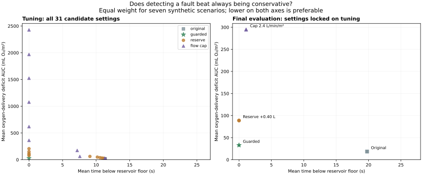
| Strategy | Low reservoir (s) | Empty requests (s) | Deficit AUC (mL O₂/m²) |
|---|---|---|---|
| Original Sentinel | 19.77 | 0.31 | 18.57 |
| Guarded Sentinel | 0.00 | 0.00 | 32.88 |
| Reserve +0.40 L | 0.00 | 0.00 | 88.82 |
| Flow cap 2.4 L/min/m² | 1.10 | 0.00 | 294.79 |
The pooled result: guarded deficit is 32.88 versus 88.82 for the fixed reserve, with zero measured depletion for both. Reserve minus guarded is 55.93 mL O₂/m² (95% paired bootstrap interval 51.03 to 60.81). Scenarios are equally weighted challenges, not clinical event frequencies.
The reversal: in the +0.40 L sensor-bias scenario, the fixed reserve has less deficit: 53.55 versus 101.43, with zero depletion for both. The guard earns its pooled advantage in other scenarios. The flow cap also loses its tuning risk match on evaluation.
| Scenario | Original | Guarded | Reserve +0.40 L | Cap 2.4 |
|---|---|---|---|---|
| nominal | 0.22 | 0.22 | 0.22 | 0.23 |
| hemodilution | 4.74 | 4.74 | 4.74 | 456.31 |
| hb bias | 51.26 | 51.26 | 51.26 | 387.04 |
| venous obstruction | 0.84 | 0.84 | 202.16 | 0.85 |
| oxygenator loss | 0.31 | 0.31 | 0.31 | 271.92 |
| compound | 71.37 | 71.37 | 309.47 | 571.93 |
| unmodeled level bias | 1.27 | 101.43 | 53.55 | 375.26 |
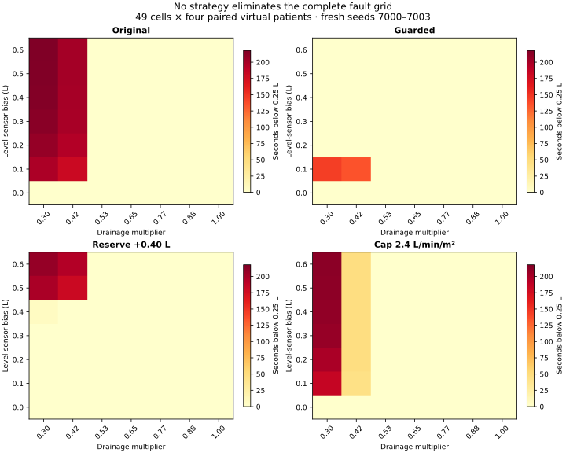
What this establishes: a bounded comparison against two conservative modifications, under the existing synthetic model. It does not establish novelty or performance on real equipment. Gradual drift, flow-sensor errors, unfamiliar plant dynamics and stronger conditional comparators remain to be tested.
Final study: 1,736 tuning + 672 evaluation + 784 stress-map runs = 3,192. The 2,240-run pilot is archived separately. Replay: choose “Conservative comparison” above · seed 6000; aggregate seeds 6000–6023. Full stress map: seeds 7000–7003.06 / BREAK THE ASSUMPTIONS
The protection does not generalize.
All four strategies and their settings were frozen before 4,320 new runs: nine sensing challenges × five plant regimes × 24 paired virtual patients. The wider test exposes gradual-drift and startup-offset blind spots, flow-measurement errors, and false level-fault attribution under unfamiliar dynamics.
Reference plant · no level alarms
Reference plant · no level alarms
Altered drainage cap · no level fault injected
These cases show why a level flag is a hypothesis, and why the earlier zero-depletion result applies only to its original challenge set. The alternative dynamics are engineering assumptions, not calibrated physiology.
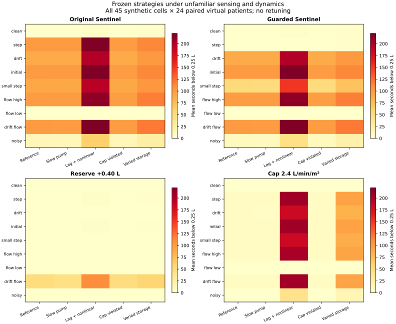
| Strategy | Low reservoir (s) | Empty requests (s) | Deficit AUC (mL O₂/m²) |
|---|---|---|---|
| Original Sentinel | 84.32 | 20.01 | 90.96 |
| Guarded Sentinel | 65.30 | 13.63 | 117.10 |
| Reserve +0.40 L | 7.13 | 0.00 | 285.65 |
| Flow cap 2.4 L/min/m² | 42.05 | 8.49 | 444.67 |
The tradeoff remains: the fixed reserve reduces mean exposure to 7.13 s versus 65.30 s for guarded, while increasing oxygen deficit from 117.10 to 285.65. Neither is a general solution. These outcomes are not risk-matched.
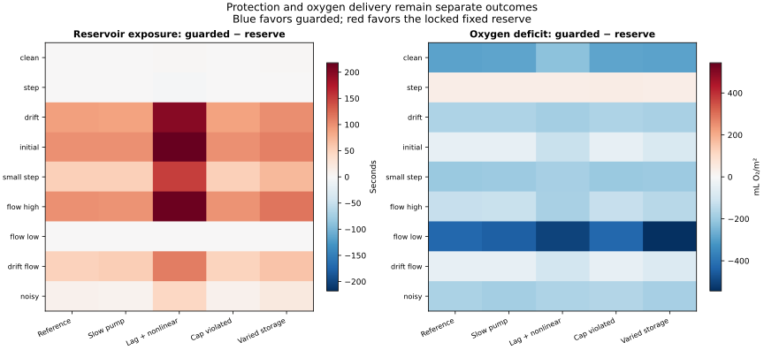
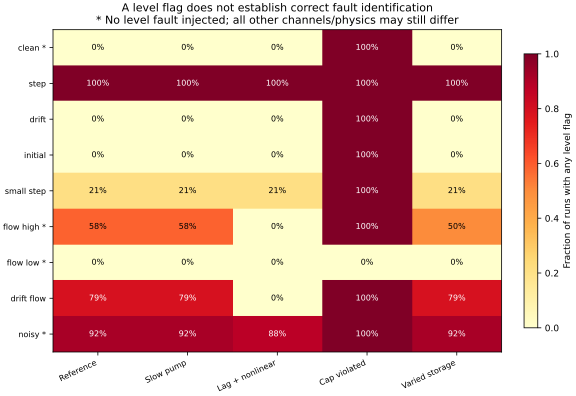
The next requirement: establish when the level measurement is trustworthy, using explicitly tested uncertainty or an independent reference. A new method would need fresh evaluation conditions; these failures must not be tuned away and then reused as independent evidence.
All 45 cells remain in the report. Six replay cells and seed 8000 were fixed before evaluation; choose “Unfamiliar sensing & dynamics” above to inspect true, sensed and estimated levels. Aggregate seeds 8000–8023. No clinical calibration or established novelty.07 / ANSWER THE QUESTION
Does credibility checking beat simple correction?
No advantage was demonstrated on the declared primary synthetic test. The primary comparison uses the same noisy, delayed level references for both methods, with the simple reserve margin selected on separate development cases. The test requires lower oxygen deficit without materially worse depletion exposure.
The broader result: with a good simulated reference, simple correction plus a 0.20 L margin reduces mean reservoir exposure from 120.02 to 75.44 s, empty requests from 9.78 to 0.07 s, and oxygen deficit from 404.06 to 389.29 mL O₂/m², compared with the fixed reserve. This is an additional descriptive contrast, not the predeclared primary test. It supports the simpler reference package under these assumptions.
| Method | Low reservoir (s) | Empty requests (s) | Deficit AUC (mL O₂/m²) |
|---|---|---|---|
| Original · ignores level reference | 208.58 | 98.60 | 216.47 |
| Fixed reserve +0.40 L · ignores reference | 120.02 | 9.78 | 404.06 |
| Step guard · ignores reference | 165.67 | 78.43 | 298.75 |
| Simple reference +0.20 L | 75.44 | 0.07 | 389.29 |
| Age-based reference bound | 79.65 | 32.31 | 342.11 |
Predeclared criteria: the age-based method’s upper paired interval must stay within +1 second of simple correction for both depletion metrics, and its oxygen deficit must be lower with a paired interval excluding zero. Protection criterion: failed. Oxygen criterion: passed. This is an engineering tolerance, not a clinical margin.
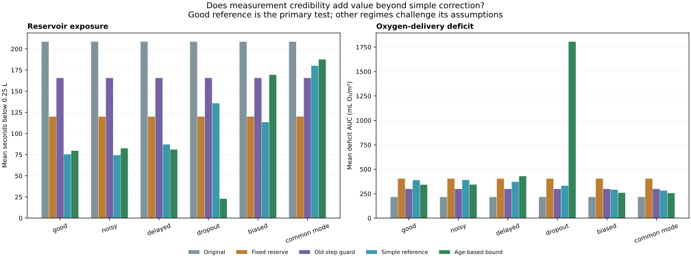
Separate the information from the algorithm: a new reference can make an existing offset observable; that alone does not show that an age-based policy is better than a simple correction. The report separately compares the old drift/startup blind spots and keeps biased, delayed, missing and common-mode references in view.
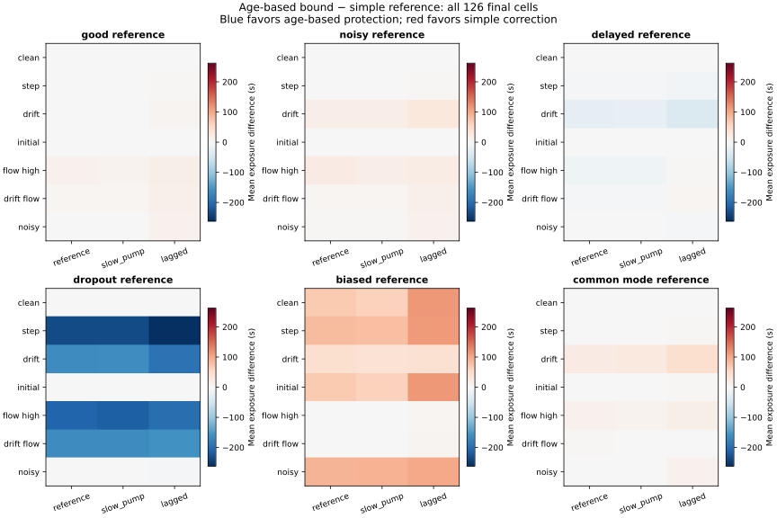
The simple method uses a 0.20 L fixed margin. The age-based method uses a 0.04 L base allowance plus 0.003 L/s of sample age, with an explicit loss-of-information response. These are engineering assumptions, not calibrated probability bounds. Neither receives true flow or drainage.
1,008 development + 7,560 held-out evaluation runs = 8,568. The final evaluation changes sensor magnitudes, timing, pump response and drainage settings. References are simulated hardware; novelty, real-equipment benefit and commercial demand remain unestablished. Choose “Independent level reference” above for six prespecified replay cells.08 / MECHANISM AND MANUSCRIPT
Explain the failure. Test stronger baselines.
The review draft now connects an analytic bias mechanism with 6,496 new runs and reference-aware PI/threshold comparisons. In a reduced active-constraint model, equilibrium is V* = V_min + margin − level offset − horizon × flow bias / 60. Correct level alone does not remove a biased-flow forecast error.
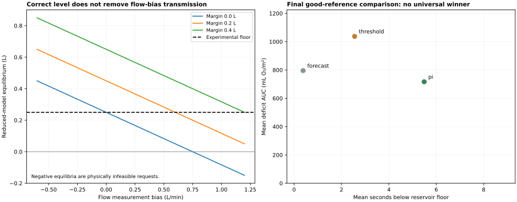
| Method | Low reservoir (s) | Empty requests (s) | Deficit AUC | High pressure (s) |
|---|---|---|---|---|
| Forecast +0.5 L | 0.38 | 0.00 | 795.36 | 5.38 |
| Level PI · target 0.6 L | 5.49 | 0.14 | 716.95 | 0.00 |
| Threshold slowdown · 0.8 L | 2.55 | 0.27 | 1037.65 | 0.50 |
Primary result: not demonstrated. PI lowers oxygen deficit and pressure exposure but adds reservoir exposure. The declared joint criterion is retained. Exact flow-bias invariance in the added baselines is a construction/property check, not a safety guarantee.
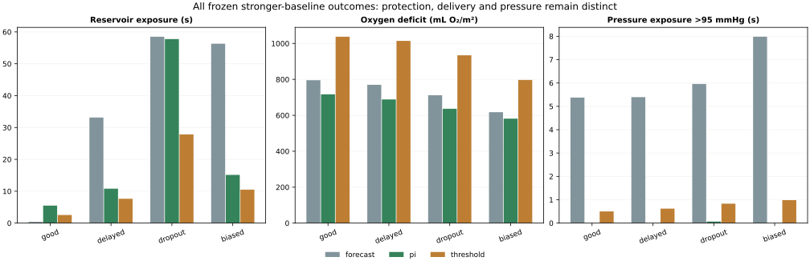
Evidence status: 160 independent scalar checks, 384 sensor-only invariant pairs and a published-range plausibility audit are complete. Raw external reservoir dynamics, independent expert review and scientific-priority assessment remain unresolved. The manuscript is an unsubmitted review draft; publication readiness is not certified.
Choose “Stronger baselines” above for four prespecified cases. Deficit AUC units: mL O₂/m². All conditions are synthetic engineering challenges.09 / START WITH A REAL CASE
Actual patient inputs. Five observed moments.
We located a published bypass case and replayed its timed pump flow, hemoglobin and arterial oxygen pressure through the oxygen-content equation, using the reported BSA of 2.73 m². These are recorded patient values. This is a sparse oxygen-equation replay; a patient-specific reservoir simulation remains blocked by missing circuit measurements.
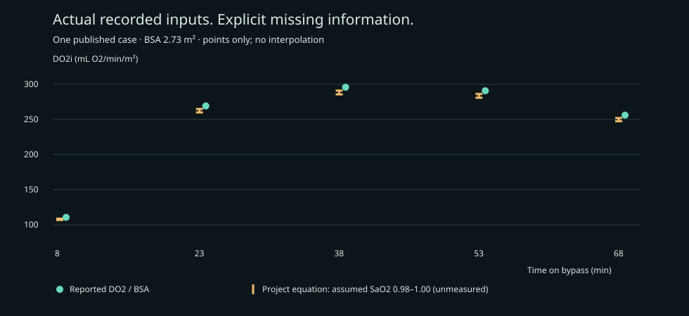
| Time (min) | Flow (L/min) | Hb (g/dL) | PaO₂ (mmHg) | Reported DO₂ / BSA | Project DO₂i sensitivity |
|---|---|---|---|---|---|
| 8 | 2.61 | 7.27 | 521 | 110.48 | 106.71–108.58 |
| 23 | 4.70 | 10.67 | 350 | 269.11 | 259.91–264.83 |
| 38 | 4.70 | 11.67 | 408 | 295.79 | 285.61–291.00 |
| 53 | 5.25 | 10.33 | 335 | 290.74 | 280.84–286.17 |
| 68 | 5.04 | 9.33 | 369 | 256.04 | 247.31–251.93 |
What this changes: using the recorded PaO₂ instead of the synthetic model’s fixed 150 mmHg changes calculated delivery by 10.67–13.77 mL O₂/min/m² at the same assumed saturation. Source and project equation coefficients also differ; the report audits that difference without tuning to the reported output.
What is missing: arterial saturation is unreported, so the amber marks use explicit assumed endpoints of 0.98–1.00. They are not measured values or confidence limits. No reservoir volumes or pump commands are available. We do not infer continuous exposure between the five samples, claim held-out prediction, or test alternative controllers on this person.
Independent arithmetic consistency check; no fitted digital twin, independent oxygen ground truth or clinical validation. Full patient dynamics require suitable synchronized records.10 / THE METHOD, IN THE OPEN
Challenge the assumptions.
A coupled circuit
A compliant patient compartment drains into a venous reservoir. The pump returns that volume. A Windkessel estimates arterial pressure; oxygen content links flow and hemoglobin to delivery.
An imperfect observer
Inline measurements can drift or disappear. An independent simulated laboratory reference updates the Hb bias estimate every three minutes. Bounds widen with time; they are not calibrated probabilities.
An explicit tradeoff
A finite-candidate predictive strategy weighs delivery against pump demand, pressure and a 20-second reservoir forecast. Infeasible steps and depletion requests remain in the results.
Research prototype. No clinical validation.
These experiments do not predict kidney injury, reproduce a LivaNova device, or establish safe settings. All fault magnitudes and controller limits are chosen engineering assumptions. The level-bias scenario deliberately breaks an observer assumption.